收录于合集
2017中国大陆一流高校国际关系学院介绍 ****
微信号“国政学人”总结了2017年中国大陆一流高校的国际关系学院名单，希望对同学们的考研、考博有帮助。这不是一个排名，而只是以各个学院的历史、规模、学术成果产出、学术声誉影响力以及学生质量作为分析依据，仅供参考。
北京大学国际关系学院、国际战略研究院
**
**
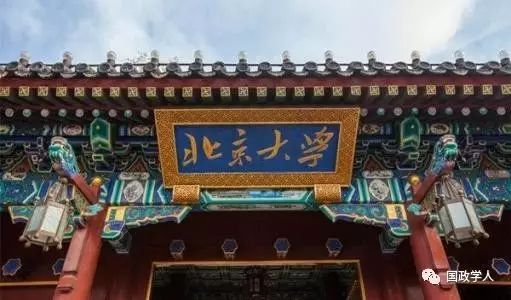
历史
北京大学国际关系学院是国内普通高校中建立最早的国际关系学院之一，前身是1960年北京大学的政治学系，1996—1998年，原北京大学国际政治学系、国际关系研究所和亚非研究所经合并调整，组成现在的北京大学国际关系学院。
规模
北京大学国际关系学院现有在职教师54人，其中教授29人，副教授22人。国际关系学院由4个系和3个研究所组成，即国际政治系、外交学与外事管理系、国际政治经济学系、比较政治学系、国际关系研究所、亚非研究所、世界社会主义研究所。此外还管理着20多个科研中心，研究领域覆盖之广泛程度，超过全国其他任何一所国际关系学院。该院的国际政治、科社与国际共运是全国重点学科。
成果
北京大学国际关系学院教授、副教授、讲师、研究生每年在中英文顶级或一流杂志上发表大量高水平学术论文。《国际政治研究》是由北京大学主办、北京大学国际关系学院暨全国高校国际政治研究会编辑出版的学术性双月刊。该杂志于2002年开始公开出版发行，享有很高的学术知名度和社会影响力，成为国内从事国际政治、国际关系教学和研究的重要学术园地。学院还与北京大学出版社等合作，先后推出了“21世纪国际政治丛书”、“国际问题论丛”、“北京大学国际关系学院系列教材”等系列著作。
**影响力 **
北京大学国际关系学院在学术影响力、政策影响力、公众影响力、国际影响力四个领域均得到较高的评价。学院部分教授直接参与国家外交决策，或为政府提供政策建议。近年来全国人大外事委员会、全国政协外事委员会两个部门中的学者委员，均出自该院。学院教授经常在中央电视台、新华网、人民网、环球网、澎湃新闻等主流媒体上发表深入评论。北京大学国际关系学院有着非常高的国际知名度，很多老师兼任国外著名高校的客座教授。
学生培养
北京大学国际关系学院为国家、社会培养了大量优秀毕业生。本科、硕士毕业生在全国各行各业中表现一流，出国深造比例非常高。博士毕业生大多进入全国各类研究型大学、科研机构工作，广受社会好评。学院学生以“爱国关天下”为理想，努力承担国关人的使命与责任。学院博士生自发举办“国关青年前沿沙龙”，邀请青年学者进行讲座，在全国国际关系专业博士生中具有广泛影响力。学院充实完善了师资队伍建设，引进了多名国外专家教授来校上课，形成了学院教师、国内兼职教授及国外兼职教授相结合的各个层次的教员队伍体系。学院还着重加强了外语教学的力度，全院学生的英语口语课一律聘请外国教师任教，部分研究生的英语精读课程也聘请了外籍教师上课。国际办学已成为学院的办学特色。学院现与英国伦敦经济政治学院、法国巴黎政治学院、日本东京大学、日本早稻田大学、美国雷鸟大学、美国蒙特雷国际关系学院均有联合培养的双学位项目。
中国人民大学国际关系学院、国家发展与战略研究院
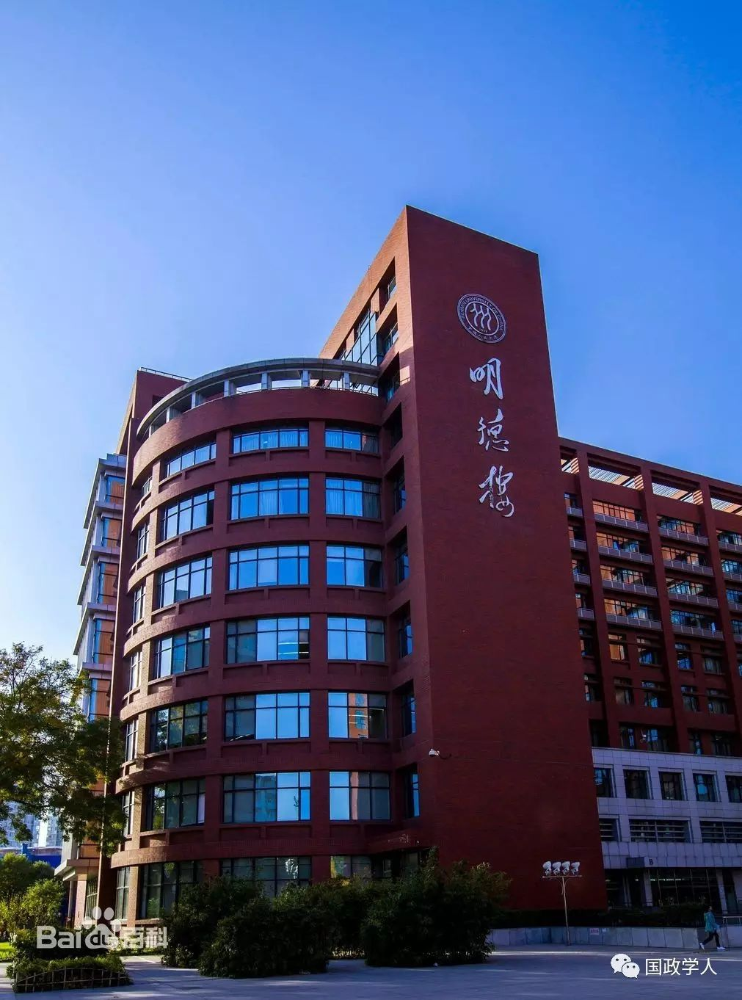
**历史 **
中国人民大学是国内最早开展国际问题和政治学教学研究的三个大学之一。1950年中国人民大学建校之初就设置了外交系。1954年成立的政治学系，1964年建立的苏联东欧研究所则位列10大地区问题研究机构之首。至2000年，政治学一级学科点获得批准后，国际问题和政治学的全部二级学科完成了建制化和机构化。为了适应新世纪对于国际问题和政治学人才培养的更高要求以及学科发展的新态势，2000年4月在原国际政治系、东欧中亚研究所、欧洲问题研究中心的基础上组建了新的国际关系学院。次年6月，校内政治学相关专业的教师和学生又进入了国际关系学院。至此，国际关系学院形成了这种四个学系、三大研究所、一个全国重点科研基地以及若干个研究中心共同组成的结构安排和学术体系。
**规模 **
国际关系学院下设国际政治系、外交学系、政治学系、世界社会主义研究所、俄罗斯东欧中亚研究所、欧洲问题研究中心等教学研究单位；并以项目运作的方式组合在职或兼职的教学研究人员，建立了美国研究中心、东亚研究中心、联合国研究中心、联合国教科文组织研究中心、国际能源战略研究中心以及比较国际政治经济研究所、国际事务研究所和公务员研究所等开放性研究机构。
学院在长期的学科建设和教学科研实践中涌现出一批全国著名的学者和学术带头人。学院现有专职教师79人，专职教师中教授31人；副教授31人，获得海外高校博士学位者占教师总数的25%。该院教师的数量超过全国其他任何一所普通高校的国际关系学院。教师队伍中有有长江学者特聘教授1人，国家百千万人才工程国家级人选2人，欧盟“让·莫内终身教授”1人，国家级教学名师奖获得者1人，教育部跨世纪优秀人才培养计划人选1人，教育部优秀青年教师奖获得者1人，教育部新世纪优秀人才支持计划人选8人。国务院学位委员会学科评议组成员1名。
成果
中国人民大学国际关系学院的学术成果，借鉴西方国际政治理论相对成熟的体系框架，但同时又使之具有中国学者的文化背景、思维方式和环境特点，对西方的现成理论在继承、借鉴的基础上进行扬弃。中国人民大学国际关系学院在借鉴西方国际政治学理论的基础上，力图运用马克思主义的基本立场、观点和方法，构建具有中国学者风格和人大特色的国际政治理论体系。
影响力
中国人民大学国际关系学院开展卓有成效的决策咨询研究，为党和国家的涉外决策提供有价值咨询报告。学院利用高等学校在决策咨询中相对中立和客观的特殊地位，发挥特殊的决策咨询作用。此外，中国人民大学国际关系学院教师编写了系列教材，广受全国其他高校的好评。如“当代中国与世界丛书”、“当代世界与中国对外战略”学术专著系列丛书，以及全国知名的“21世纪国际政治系列教材”，此外还有“比较政治研究”学术集刊、“当代中国的政治发展”学术专著系列丛书，等等。
学生培养
中国人民大学国际关系学院坚持以政治学理论和方法作为国际关系学的学科基础，保障国际关系教学研究的学术水平和理论功底，保持国际关系基本理论在教学研究中的优势地位。同时，学院力争在国际政治与世界经济的交叉研究方面取得进一步发展。
复旦大学国际关系与公共事务学院、国际问题研究院
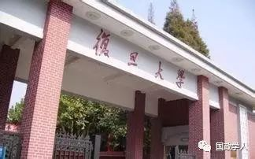
**历史 **
复旦大学国际关系与公共事务学院的前身可追溯到1923年建立的政治学系，曾一度停办，后来恢复。学校于1964年2月正式将政治学系改为国际政治系，成为国内最早成立的三个国际政治系之一。国际政治系下设政治学专业和国际政治专业。1980年，国际政治系在全国率先恢复了政治学专业，开始招收政治学专业本科生。2000年10月，在国际政治系的基础上建立了国际关系与公共事务学院，大国务的学科建设格局基本形成。2009年，增设外交学系。在2013年公布的全国一级学科评估中，获得并列第一；在QS学科排行榜上，一直位居亚洲前30名左右，广受国际好评。
复旦大学国际问题研究成立于2000年。2013年起，复旦大学开始整合全校力量资源，瞄准国家战略和外交决策需求，努力把国际问题研究院建设成为中国国际关系与国际问题研究的新高地和具有国际影响的世界一流智库。目前，研究院共有专职研究人员34人，其中教授15人，副教授14人。2013年底，研究院院获聘外交部政策研究重点合作单位（2013-2015年），以此为契机，为国家外交决策提供更好的决策服务和智力支持。
规模
复旦大学国际关系与公共事务学院下设政治学系、国际政治系、公共行政系，同时将当时分散在各院系的美国研究中心、日本研究中心、欧洲研究中心、韩国研究中心、俄罗斯研究中心、北欧研究中心和拉丁美洲研究室合并组成国际问题研究院.复旦大学国际关系与公共事务学院目前有专任教师64人，具有正高级职称30人，副高级职称22人，中级职称28人；博士生导师22人，硕士生导师31人。学院有国家重点学科2个。
成果
复旦大学国际关系与公共事务学院每年教师承担20余项国家级、省部级研究课题，出版20余部专著，在国内外权威或核心学术杂志上发表论文200余篇，在研国家级重大课题近10项，每年承办10多场国际、国内学术会议，邀请国内外著名学者开设80余个专题讲座。学院出版近10套系列丛书，并先后创办了《复旦国际关系评论》、《复旦政治学评论》、《复旦公共行政评论》、《宗教与美国社会》、《基督教学术》、《复旦政治哲学评论》等六本集刊（均为书代刊），其中前五种已列入中文社会科学索引（CSSCI）来源集刊。尤其重要的是，该院教授、副教授、讲师每年在国际一流SSCI杂志上发表高水平论文，数量和质量在全国是最高的，超过其他任何一个高校的国际关系学院，有的教授曾经获得国际权威学术共同体组织颁发的著作奖项，在全国属首次。目前学院刚刚创办的Chinese Political Science Review杂志，知名度和影响力正在上升。
**影响力 **
复旦大学国际关系与公共事务学院的学术声誉得到国内外的高度认可，已经形成具有复旦特色的学术传统。学院教授大多具有广泛的社会兼职，部分单位参与外交决策或提供重要政策建议。学院大力推进教学和研究的国际化，鼓励科研的国际合作和国际发表。
**学生培养 **
复旦大学国际关系与公共事务学院是全国最早引进西方国际关系理论的学校，学生理论与研究方法论基础扎实，实践能力强。本科生具有较高的理论素养，是兼备做事和成事能力的复合型人才。学院的博士生每年在优秀的核心期刊上发表论文，年均每人平均发文量超过全国其他高校的国际关系学院。博士生毕业后，绝大多数都去其他高校、科研单位工作，从事与本专业密切相关的工作，为全国培养了大量的国际关系研究者。该院博士生的就业与专业契合度，被认为是全国的国际关系学院中最高的。目前学院正在不断努力发展英文学位项目。
清华大学国际关系研究院、国际关系学系
**
**
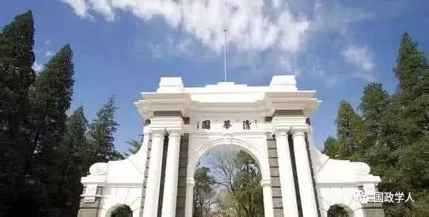
历史
清华大学于1997年成立了国际问题研究所，于2008年成立了国际关系学系，2009年重组政治学系。在一所两系的基础上，于2010年成立了当代国际关系研究院（当代院），由原国务委员唐家璇同志任名誉院长。2015年12月，经清华大学2015—2016学年度第11次校务会议讨论决定，将清华大学国际问题研究所与当代国际关系研究院合并为一，更名为清华大学国际关系研究院，简称国关院。
清华大学国际关系学系成立于2007年12月，本系是在1997年成立的国际问题研究所的基础上建立的。2003年增设国际关系硕士点和博士点，以及社会科学实验班国际政治专业。2010年国际关系学成为北京市重点学科，并开设首届国际关系学专业英语硕士班。
规模
清华大学国际关系研究院是一个研究与教学相结合的单位，下设7个研究中心、3个研究项目和2个编辑部。所有教学与研究人员均承担科研与教学双重任务。国关院有教学人员36人，研究人员3人，博士后4人，行政人员6人。
国关系设有四个教研室，分别是：政治学教研室，包括政治学理论和比较政治学等研究方向；国际关系学教研室，包括国际关系理论和国际关系史等研究方向；国际政治经济教研室，包括国际政治经济学和比较政治经济学等研究方向；外交学教研室，包括外交学理论和中国外交两等研究方向。师资队伍的年龄结构和专业特长较为合理，教师个个年富力强，都有博士学位，在国外知名大学学习和进修的经历，具有较强的国际学术交流能力。骨干教师不仅有丰富的教学和科研经验，而且在学术上有突出成果，在国内外有较大的影响力。
成果
清华大学国际关系研究院办有四份刊物，The Chinese Journal of International Politics（季刊）、《国际政治科学》（季刊）、《中美关系简讯》和《经济外交年鉴》。此外，每年发表《清华国际安全论坛报告》、学术专著和教材。每年学院教师、研究生及部分本科生，都在国内一流中文国际关系期刊上发表大量高水平的学术文章，论证严格、方法扎实，文章质量水平得到学界公认。很多教师在国际一流杂志上发表过文章，甚至在International Organization这样的顶级杂志上发表文章。The Chinese Journal of International Politics杂志目前是中国大陆高校主办的唯一一家政治学类SSCI杂志，主要集中关注国际关系理论以及中国崛起，目前影响因子为1.5，位居国际关系类SSCI杂志的第14名，影响因子高于任何一家地区研究类杂志。
影响力
清华大学国际关系研究院在学术上具有四方面的特点。1、以定量分析国际关系为主，在科学研究方法及定量分析方面具有成体系的教学课程和研究项目。2、具有从科学技术角度研究国际安全战略的特点，在军控与裁军方面的教学与科研均与国际接轨。3、国际化程度高，部分教师为外藉人士，半数研究生为外国留学生。4、具有理论研究与政策相结合的特点，与政府职能部门保持工作联系，许多教师都具有在政府部门从事政策研究的经验。国关院组织多种多样学术活动，每年举办名种论坛、研讨会和讲座上百次。连续举办了五届“世界和平论坛”，九届“政治学与国际关系学术共同体年会”，2016年达到1000多人，十四期“清华国际安全论坛”，四届“青年国际关系学者理论研讨会”，十四届国际关系研究方法暑期班，九届军控研讨班。“国际关系学术共同体年会”影响力的扩大以及“国际关系研究方法暑期班”的推广，使得全国新一代的国际关系专业青年学者、研究生，在学术理念上一般或多或少都受到了清华国关院的影响。
学生培养
清华大学国关系课程设置参照了世界一流大学的教学体系，部分课程用英文授课，体现了国际化和学科的前沿性。其中，《国际关系分析》被评为国家级精品课，80% 的课程在学校教学评估中为优秀。本系出版了《国际关系分析》、《国际关系研究实用方法》等有影响的教材和教学用书。其中，《国际关系研究实用方法》是国家十一•五规划教材和教育部研究生教学推荐用书。在教育理念方面，国关系坚持理论与实践相结合。国关系的博士生教育重在培养学生的学术研究能力，硕士生教育侧重专业应用能力，本科生教育突出基本素质和综合能力培养。国际关系学系博士毕业生基本都在研究型大学或科研单位工作，质量素质受到用人单位的高度评价。硕士毕业生的就业方向为政府职能部门、新闻机构及相关经济单位等与外事相关的工作，部分优秀硕士毕业生到国际著名大学继续深造。国关系与国内外学术及外事机构建立了多种形式的学术交流与合作关系，聘请多位国家有关部委的主要负责人和国内外著名学者为本系兼职教授。
外交学院
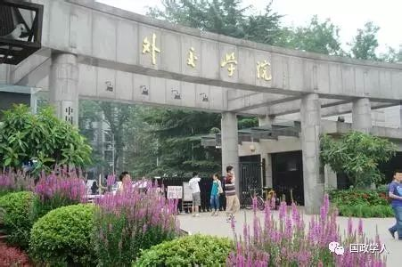
历史
外交学院是以服务中国外交事业为宗旨，培养一流外交外事人才的小规模、高层次、特色鲜明的外交部唯一直属高校。在周恩来总理倡议下，1955年经党中央、毛主席批准成立。周总理为学院亲笔题写校名，时任国务院副总理兼外交部部长陈毅元帅担任外交学院首任院长。学院自创办以来一直得到国家领导人的亲切关怀。周恩来总理、陈毅副总理、钱其琛副总理、唐家璇国务委员、戴秉国国务委员、杨洁篪国务委员及历任外交部长曾多次来学院视察和指导工作。2012年9月，时任国务院总理温家宝同志为学院亲笔题写了“中国外交官的摇篮”。2012年9月外交学院沙河校区建设如期完工并投入使用。
规模
外交学院采取“多规格、多层次、多形式”的办学体制，设立了外交与外事管理系、英语系、外语系、国际法系、国际经济学院、基础教学部、研究生部、国际关系研究所、国际教育学院等9大教学单位。外交学院是全国首先设立外交学本科专业的高校，现拥有国际关系、外交学两个国家级重点学科，政治学（一级学科）和英语语言文学两个北京市重点学科。拥有博士后流动站一个，一级学科博士点一个，二级学科博士点3个。两个国家一级学会——中国国际关系学会和中国国际法学会设在该院。
成果
外交学院教师每年在国内外一流杂志上发表大量高水平论文。其中，《外交评论》双月刊是学校学刊，是中国国际关系学会会刊，也是南京大学“中文社会科学引文索引（CSSCI）来源期刊”，2015年，《外交评论》与中国知网（CNKI）合作推出英文数字版。《外交评论》恪守学术规范，严格实行同行评议制度，来稿唯以思想内容和学术质量为取舍标准。
影响力
外交学院同国外院校的校际交流不断扩大，目前同美国、英国、法国、德国、日本等79所大学或机构建立了友好关系，并每年选派部分优秀本科生及研究生到美国、俄罗斯、日本、法国、德国、意大利、挪威、荷兰、瑞士等国家的大学进行交流学习。外交学院为国家培养了两万余名优秀的毕业生，其中近500人担任驻外大使，为新中国外交事业做出了重要贡献。世界上凡是有五星红旗升起的地方，就有外交学院的毕业生。
学生培养
外交学院认真贯彻党的教育方针，以周恩来总理向外交人员提出的“站稳立场、掌握政策、熟悉业务、严守纪律”十六字方针作为校训。以钱其琛同志提出的“面向世界，面向未来、面向社会、面向实际”为办学方针，把培养高层次外交外事人才作为办学目标。不断加大教学改革力度，改革办学模式和办学体制，拓宽专业方向，更新教学内容，教学质量和教学水平以及学生综合素质不断得到提升。 外交学院秉承外交特色鲜明，外语优势突出的办学理念，致力于培养"爱祖国、知世界，通专业、精外语，高素质、复合型"的优秀外交外事人才。学院提倡理论联系实际、实事求是、刻苦严谨的学风，强调德智体全面发展。在教学上，既重视基础理论课教学，又重视基本技能的训练和能力的培养；既重视外语水平的提高，又重视外交业务和经济、法律等基本知识的掌握。2014年，外交部、教育部共建外交学院签约仪式在钓鱼台国宾馆举行，两部将建立协调机制。
南开大学周恩来政府管理学院国际关系系
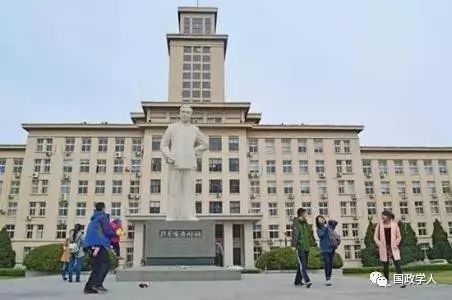
历史
1923年南开大学成立政治学系,一度取消，1984年重建。经过二十年的艰苦创业，南开的政治学学科获得了较快的发展，涌现了一批在国内外有一定影响的中青年学者，得到了国内外学术界的好评。南开大学周恩来政府管理学院国际关系系于2003年6月正式建立，由原属政治学系的国际关系、国际政治和外交学三个教研室组成。
规模
至2017年5月，南开大学周恩来政府管理学院国际关系系现有教师12名：其中，教授（博士生导师）2人、副教授6人、讲师4人。该系师资队伍精干，年龄结构和研究领域分布合理，全部教师均在国内外知名大学获得博士学位，大部分教师曾赴海外进行访问、学习、进修和参加国际会议，积极参与国内外各种学术交流活动。此外，李肇星、王缉思等著名专家学者为本系兼职教授，美国前国务卿基辛格、韩国前任总统金大中为本系礼聘名誉教授，已故的著名国际关系理论大师沃尔兹也曾经担任名誉教授。
国际关系系的国际关系理论与研究方法、全球治理与一体化研究、欧盟研究、美国对外政策、中美关系等研究领域，在学术界有着比较鲜明的特色和较大的影响力。本系承担了多项国家和省部级重大研究课题，取得了一批具有标志性和重要影响的优秀学术研究成果。本系重视国际关系理论研究和政策分析，致力于拓展区域研究，在巩固原有的美国研究、欧洲研究等优势学科的基础上，努力推进对东南亚、南亚、中亚、中东、非洲和拉美等地区的研究，并不断加强战略安全问题与非传统安全问题的研究，以求进一步完善本专业的学科布局与学科建设。
成果
南开大学周恩来政府管理学院国际关系系的教师每年发表大量高质量的中英文学术论文，教师年均每人发文量，在全国的国际关系学院中位居前列。国际关系系教师发表的论文，理论功底深厚，科学方法论优势明显，论证扎实有力，很多涉及到国际关系理论的论文已经成为其他高校教学时的必读文献，被引用率很高。此外，该系本科生、研究生的在科研方面的表现也非常突出，很多学生在本科、硕士阶段已经能够单独或者与教师合作在国内权威的杂志上发表论文。南开国际关系系学生的科研水平受到了其他学校的承认，尽管系的规模不大，但历史上培养优秀科研者的数量很多，学术氛围非常好。很多从本系毕业的学生，后来经过学术深造，在知名学府担任教师，如中国人民大学、复旦大学、南京大学，甚至有不止一位校友现在在美国知名高校任教。
影响力
南开大学周恩来政府管理学院注重对外学术交流，现已同美国、日本、韩国、英国、德国、澳大利亚等国和香港、台湾地区的多所大学建立了学术交流关系，多次召开国际学术研讨会。学院教师普遍具有广泛的国际学术联系，常年保有10%以上的教师在国（境）外工作、学习或参加国际学术会议。
**学生培养 **
南开大学自1919年建校之日起，就本着“文以治国，理以强国，商以富国”的办学思想，十分重视作为培养治国人才的政法、管理学科的建设，并顺应当时世界学科发展的现状和趋势，强调政治、经济、法律等学科间密切结合，形成了基础扎实、知识面宽、质量优先、学术精良的好传统。面向21世纪，学院的办院指导思想是：秉承“允公允能”校训，弘扬“为人民服务”精神，追求素质全面发展，夯实专业基础知识，培养实际工作能力。目前，国际关系系招收国际政治专业的本科生，国际政治、国际关系和外交学三个专业的硕士生和国际关系专业的博士生。本系在教学上注重科学研究方法的训练、理论经典的研读以及研究前沿的追踪。2010年6月以来，本系学生自主创办的《新视界》杂志成为国际关系系学生学术兴趣培养和学习能力锻炼的重要平台。国际关系系还向国内外高校和研究机构输送优秀毕业生，他们其中不少人在进一步深造后成为了国内外教学或研究机构中十分活跃的骨干力量。
南京大学历史学院国际关系研究院、政府管理学院、亚太发展研究中心、中国南海研究协同创新中心、中美文化研究中心
**
**
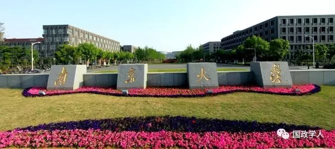
南京大学国际关系专业的特点是，全校的国际关系专业教师、学生分布在四个单位：政府管理学院、历史学院国际关系研究院、中国南海研究协同创新中心、中美文化研究中心。
政府管理学院是南京大学培养国际关系专业学生的主要部门之一。其渊源可以追溯到1921年成立的国立东南大学、中央大学政治学系和1924年成立的私立金陵大学政治学系，至今已有90余年历史。1986年，南京大学重建政治学系，2009年更名为政府管理学院。学院目前正在筹建外交与国际事务系，国际政治是该院四大专业之一。南京大学政府管理学院在国际关系理论方面优势明显，尤其在马克思主义国际关系理论、国际政治经济学方面有突出成果。年轻学者在国际冲突、社会科学实证方法（尤其是定量方法）、全球治理方面发表了很多高水平优秀论文。
南京大学目前正在筹建历史学院，下设国际关系研究院。南京大学历史学系前身溯源于1902年建立的三江师范学堂国史科，已经有百余年的历史。历史学系下设国际关系专业硕士点、博士点。1995年本系被确定为国家教育部直属的文科人才培养和科学研究基地。目前刚刚成立国际关系研究院，已经开始招收研究生。南京大学历史学系正准备在近年内将更名为历史学院。三个系及其相关学科均独立招生。五年后的历史学院，师资力量将有明显改观，学生人数也将有较大幅度增加。历史学系曾多次举办欧洲问题研究等大型国际学术讨论会。历史系毕业生就业面较宽，在国家外交部、安全部、新闻机构、高校研究所、部队等单位，都可看到历史学系学生的身影。
中国南海研究协同创新中心是国家认定的首批14家“2011协同创新中心”之一。中心成立于2012年7月，由南京大学牵头，外交部、海南省、国家海洋局三个政府部门支持，联合中国南海研究院、海军指挥学院、中国人民大学、四川大学、中国科学院、中国社会科学院等单位共同组建。中心以国家重大战略需求为导向，全面推动南海问题综合研究，服务国家南海战略决策。中心南海问题话语权建设、南海预警及应急响应研究、南海战略决策支持、南海高端人才培养五大工程，全力打造集学术创新体、高端智库、人才培养基地、国际交流对话四大功能与目标于一身的中国特色新型智库。
南京大学- 约翰斯·霍普金斯大学中美文化研究中心（简称中美中心）是由中国和美国的两所著名大学——南京大学和约翰斯·霍普金斯大学共同创办的教学与研究机构。它于1986年开始招生，是中国改革开放以后最早的高等教育国际合作长期项目。开办20年后，即2006年，中美中心又在证书项目的基础上增加了硕士学位项目。今天，中美中心已经成为国际知名的跨国教学与研究机构。无论在美国还是中国，中美中心都被看做是高等教育国际合作的典范。中美文化研究中心旨在培养从事中美双边事务和国际事务的专门人才，同时它也培养有关领域的教学科研人员。多年来，已经有来自中国、美国和其他国家的约2500名具有杰出才能的学生从中美中心毕业，他们活跃在中美两国以及世界各地的政府、企业、高校、科研机构、媒体、非政府组织等各个部门。南京大学和约翰斯·霍普金斯大学聘请来自中国和美国的教授为学生讲课。中国学生由美国教授授课，国际学生则由中国教授授课，中美中心具有非常良好的中英双语环境。每年都有许多重要的客人前来访问，包括美国前总统布什、中国前国家领导人万里等著名政治家，曾邀请吴敬琏、李道豫、弗朗西斯·福山、傅高义等中外知名学者讲演。中心硬件设施先进，其图书馆是在中国境内从事国际问题和美国问题研究的最好的专业图书馆之一。
北京外国语大学国际关系学院、国际问题研究所
**
**
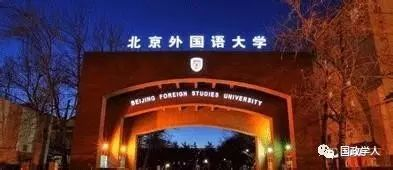
历史
北京外国语大学国际关系学院组建于2006年，由原英语学院外交学系与原国际问题研究所合并组成。2007年，前外交部部长李肇星同志出任学院名誉院长。学院现下设三系、一所、一刊和四个研究中心，分别为外交学系、国际政治学系、政治学与行政学系、国际问题研究所、《国际论坛》杂志编辑部、社会性别与全球问题研究中心、东西方关系研究中心、联合国与国际组织研究中心、公共外交研究中心。学院现有在编教职工25人，长期聘用外国专家2人。其中，专任教师中有教授（研究员）5人，副教授（副研究员）11人，90%以上专任教师和研究人员拥有博士学位，50%以上具有一年以上出国留学或学术交流经历。
规模
北京外国语大学国际关系学院现拥有政治学一级学科硕士学位授予权，包括中外政治制度、国际关系、国际政治、外交学、区域学、公共外交和商务外交七个硕士研究生专业，同时拥有国际关系与区域研究二级学科博士点，形成了从学士到博士的完整人才培养体系。作为我国培养外交、外事人才的重要基地，北京外国语大学素有“外交官摇篮”的美誉。学院是我国外交外事人才的培养基地、国际问题研究的学术重镇和对外政策咨询的特色智库。北京外国语大学还成立了公共外交研究中心。
成果
近5年来，北京外国语大学国际关系学院教师和科研人员共承担各级各类课题30余项，撰写出版学术著作和教材10余部，翻译和出版国外学术著作20余部。其中2部专著获得北京市社会科学优秀成果二等奖，一人获得教育部人文社会科学优秀成果三等奖。发表学术论文300余篇。一人入选教育部“新世纪人才”计划，一人入选北京市高校青年英才计划。
影响力
北京外国语大学国际关系学院教师每年在全国优秀的中文期刊上发表文章，撰写的报告受到政府高度重视。目前，学院有两个学术论坛在全国国际关系学界具有较高的知名度，受到其他学校的关注：一个是“北外国关前沿沙龙”，目前已经举办九期学术活动；另一个是“政治心理学凉风书会”，目前已经举办50多期活动。
学生培养
在课程建设方面，北外国际关系学院注重突出北外特色，发挥北外优势，突破传统的单科型教学模式，实行专业和外语并重的方针。在本科层次，在课程设置上，把所有专业课按授课语种分为中文专业课、双语专业课和英文专业课三大类，三类课程在比例上约各占三分之一。在外语教学上，要求学生辅修英语语言学双学士学位并通过英语专业八级考试。
上海外国语大学国际关系与公共事务学院、中东研究所
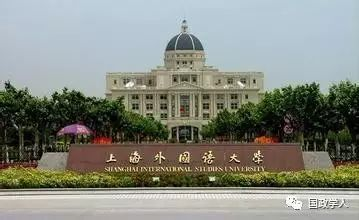
历史
国际关系与公共事务学院成立于2014年，是上海外国语大学适应转型发展与协同创新战略需要，在整合原有国际关系与外交事务研究院、法学院国际事务系、英语学院国际公务员班以及若干区域国别研究中心等基础上成立的教学科研实体，也是学校发挥多语种优势、整合政治学一级学科力量、推动中国特色区域国别研究协同创新平台的重要战略步骤。中东研究所也是上海外国语大学从事国际关系学术研究的重镇之一。中东研究所于1980年9月成立，下设阿拉伯语言文化研究室和《阿拉伯世界》编辑部。2000年12月上海外国语大学中东研究所被教育部批准建立为教育部人文社会科学重点研究基地，现在也是上外唯一的重点基地。
规模
上外政治学科的研究机构正式发轫于1980年，以俄语语言文化研究的优势建立了苏联问题研究室，并先后发展成为苏联研究所、国际问题研究所、国际关系与外交事务研究院等专门研究机构，着重国际政治、比较政治领域的研究。同时学校以中东研究所等教育部人文社科基地为龙头，欧盟研究中心、俄罗斯研究中心、英国研究中心等教育部区域与国别研究基地为支点，G20研究中心、加拿大研究中心、海外利益研究中心、中国与国际组织研究中心、伦理与国际事务研究中心等校设研究机构为支撑，形成了以国别区域研究为特色的政治学科智库群与研究机构体系。学院下设国际政治系、外交学系、比较政治系、公共管理系、外语教学部和中国学研究所等教学机构，以及若干区域与国别研究基地以及《国际观察》编辑部等科研机构。
目前学院教职人员有41人，其中包括教授（研究员）9名，副教授（副研究员）13人，讲师（助理研究员）8人，行政人员和教辅人员11名。还有一些国内外著名学者在该院担任兼职教授。院长为郭树勇教授。目前该院致力于招聘具有扎实学术发表能力的人才，重视英文学术发表，目前学院发展迅速。
成果
上海外国语大学国际关系与公共事务学院和中东研究所教师每年均在国内外一流杂志上发表大量优秀文章。其中，《国际观察》是全国排名靠前的国际关系综合性CSSCI期刊，《阿拉伯世界研究》是中东研究所主办的具有影响力的专业性杂志。
影响力
上海外国语大学国际关系与公共事务学院、中东研究所教师在学术、政策方面均有较强的影响力。教师为媒体写时评、发表评论有近百篇。上外逐步建立起具有优势和特色的研究队伍，把应用对策研究与基础研究有机地结合起来，把社会科学课题与人文科学课题结合起来，与中央有关部委保持经常性联系、沟通，做好咨询服务工作。
学生培养
与此同时，上外政治学科的人才培养也不断取得新进展。自1995年开始招收硕士研究生。2001年起开始招收国际政治本科生，2003起招收博士研究生。迄今为止已培养学士400余人，硕士、博士近300名。目前，学院已经拥有政治学一级学科博士点、3个二级学科博士点（国际关系、外交学、国际政治）和5个二级学科硕士点（国际关系、国际政治、外交学、中外政治制度、国际公共管理），并已设立政治学博士后流动站，形成了完整的本硕博教学体系。
对外经贸大学国际关系学院
**
**
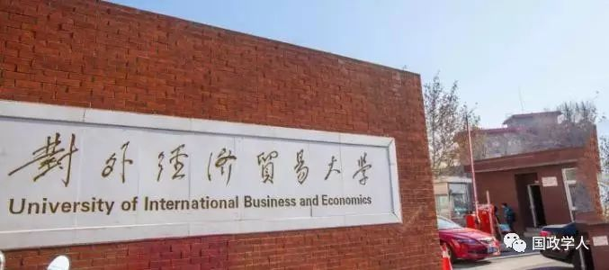
历史
对外经贸大学国际关系学院是对外经济贸易大学教学与科研实力雄厚的学院之一，现有政治学系、国际政治学系、国际政治经济学系、外交学系等4个教学单位，设有国际能源与环境研究中心、经济外交研究中心、国际移民与国家安全研究中心、软实力与国家战略研究中心、当代中国政治发展研究中心、大数据国际关系研究中心等6个研究机构。学院拥有政治学一级学科硕士学位授予权，设有政治学理论、中外政治制度、国际关系、国际政治、外交学、中共党史（党建）、科社与共运等七个硕士研究生专业，为学生的未来发展提供了更多深造机会。
规模
对外经贸大学国际关系学院拥有一支长期从事政治学、国际政治学、外交学教学与研究的高水平师资队伍，现有教职工34人，其中专职教师29人，包括教授4人（另有兼职教授9人），副教授15人，90%以上的教师拥有博士学位，不少教师曾在美国哈佛大学、芝加哥大学、德国国际政治与安全研究院、柏林自由大学、英国伦敦政治经济学院、日本早稻田大学、爱知大学、韩国首尔国立大学、新加坡国立大学等海外著名高等学府和研究机构从事教学科研工作。
成果
近年来，对外经贸大学国际关系学院科研工作屡创佳绩，科研立项获得突破性进展，成果发表和出版的数量与质量都有大幅度提升，教师科研能力和学术影响力显著提高。科研项目方面，截止到2015年11月，学院累计成功申报国家社科基金项目12项，教育部人文社会科学基金项目17项，其他省部级科研课题9项，校级各类科研课题45项。除纵向项目外，学院成功获得中央部委和地方政府横向课题11项。科研成果方面，截止到2015年11月，学院累计发表CSSCI来源A类期刊论文20篇，B类期刊论文42篇，C类期刊论文121篇，SSCI期刊论文 8篇，其他期刊论文137篇，出版专著11本，被采纳研究报告14份，入选国家社会科学基金项目成果要报1篇，获北京市第十二届哲学社会科学优秀成果奖2项，获北京市高等教育教学改革成果奖1项。
影响力
对外经贸大学国际关系学院教师在教学科研工作中体现出良好的业务素质，发表和出版了一大批高质量的论文和著作，在学术界赢得了较大的影响力。学院有2人获北京市哲学社会科学二等奖，1人获北京市高等教育教学改革成果奖，4人入选学校“杰出青年学者”和“优秀青年学者”支持计划。
学生培养
对外经贸大学国际关系学院学生的学术素养也有较大提升。“十二五”期间，国际关系学院学生在各类学术刊物上发表学术论文累计20多篇，在《中国行政管理》、《教学与研究》、《外交评论》、《现代国际关系》、《国际问题研究》、《国际观察》等CSSCI来源期刊上发表论文9篇，其中B类期刊论文4篇。截止到2015年7月，学院国际政治专业本科生毕业人数累计224人，其中102人直接就业，61人出国留学，61人国内深造，分别占总人数比为45.5%、27.2%、27.2%。在直接就业方面，凭借自身扎实的专业基础和优秀的综合素质，国际政治专业学生显示出较强的竞争力，就业单位涵盖政府机构、银行、媒体、各类企业，呈现宽口径、多元化的就业格局。学院2014年毕业研究生15人，2015年毕业14人。两届毕业生各有1人考取国内著名高校（中国人民大学和外交学院）博士生。
上海交通大学国际与公共事务学院
**
**
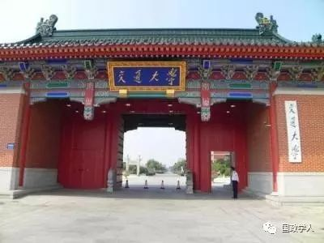
历史
2003年6月，上海交通大学国际与公共事务学院宣告成立。鲜为人知的是，交通大学政治管理类人才培养可以追溯到20世纪之初，当时南洋公学政治特班的举办，为迈入现代的中国培养具有世界眼光和科学知识的治国理政人才开了新风。21世纪之初，国际与公共事务学院的诞生，则是交通大学在政治管理类人才培养和科学研究上承前启后、继往开来的新里程碑。学院在成立之初就确立了高精尖的办学理念，旨在成为中国未来政治家、外交家和高级公务员的摇篮，同时也是蜚声中外的研究高地和思想库。
规模
上海交通大学国际与公共事务学院涵盖公共管理与政治学两个一级学科，下设公共行政系、公共经济与社会政策系、比较政治系和国际关系系。学院在最近一轮的全国学科评估中名列前茅。学院建有首批上海市社会科学创新研究基地以及上海市软科学研究基地、上海市社会调查分中心、台湾研究基地、民意与舆情调研中心、公共政策与治理创新研究中心、第三部门研究中心、国家战略研究中心、环太研究中心、日本研究中心、以色列中心等研究机构，得到“211工程”三期重点学科建设项目的支持，承担国家、教育部和上海市的社会科学规划项目重大项目、重点项目等，并获得国家和上海精品课程、国家级精品资源共享课程等重要教学项目，创造了很高的人均科研生产力，人才培养声誉鹊起，整体办学水平跃居全国高校前列。学院现有教职员工60余人，拥有一批公共管理领域和政治科学的国际化高端师资，包括国家和上海市人才工程入选者、教育部长江学者特聘教授、上海交通大学特聘教授和冠名讲席教授等。
成果
上海交通大学国际与公共事务学院教师每年在政治学、国际关系学、公共管理杂志上发表优质的中英文学术论文。学院大力发展社会科学研究方法，倡导发表扎实的学术论文。该院每一位教师都经过严格学术训练并且具有很高的学术研究与发表能力。《实证社会科学》是由上海交通大学国际与公共事务学院主办的一本新的社会科学类学术期刊。期刊以实证性研究为导向，推动实证性社会科学发展，侧重刊发社会学、政治学、经济学、法学和管理学等社会科学各个领域实证与探索的最新成果，包括实证研究方法的研究及探讨。该杂志刚刚创办，但立即受到学界好评。
影响力
国际与公共事务学院有较强的国际影响力。学院聘请了智利总统巴切莱特、日本前首相中曾根康弘、联合国前副秘书长陈健、国际博览局前主席吴建民、博鳌亚洲论坛理事长周文重、美国宾夕法尼亚大学校长哥特曼、兰德公司总裁托姆逊等国际政要和学界领袖担任名誉教授、顾问教授和兼职教授。学院招收本科生、硕士生、博士生以及MPA专业硕士研究生等各类学生，常年在读学生上千人，除外还有上百人的海外留学生就读。一批毕业校友已经走上了中央和地方各级党政部门和机构的领导岗位，成为推动国家经济社会发展和文明进步的中坚力量。
学生培养
国际与公共事务学院以“为民族立生命，为万世开太平”为立院宗旨，实施跨越式发展、人才强院、学术立院和国际化的发展战略，着力营造“博学、明德、奋进、和谐”的学院文化，核心竞争力和社会影响力不断提升，逐步形成了政治学和公共管理的师资高地和研究高地，国际化优势明显，发展势头强劲，充满生机和活力，正在朝着世界一流学院稳步前进。
暨南大学国际关系学院、华侨华人研究院、21世纪丝绸之路研究院
**
**
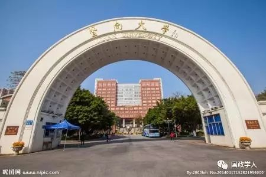
历史
1927年，暨南大学设立南洋文化教育事业部，聚集人才，系统研究东南亚问题和华侨问题，出版《南洋研究》、《南洋情报》等刊物及多种专著，是中国现代史上规模最大、成绩最多、声名最显著的东南亚与华侨华人研究的专门机构，在海内外产生了广泛而深远的社会和学术影响。1958年暨南大学在广州重建后，东南亚研究和华侨华人研究继续得到重视并取得了长足发展，成为彰显“侨校”特色的两大研究领域。2011年，暨南大学为打造具有侨校特色的创新研究平台，再次整合全校国际关系和华侨华人及其他相关领域研究力量，成立国际关系学院/华侨华人研究院。
规模
目前，暨南大学国际关系学院设有四个教学科研单位，即华侨华人研究院（教育部人文社会科学重点研究基地）、东南亚研究所、国际政治学系、《东南亚研究》杂志社；与此同时挂设多个研究中心，它们是美国研究中心、非洲研究中心、海峡两岸关系研究中心、中国海洋发展研究中心·南海战略研究基地、跨国移民研究中心、和平与冲突研究中心、海外华人人才研究中心、侨务战略研究中心、海外华人政治经济研究中心、海外华人文化与社会研究中心、侨务干部培训中心、华侨华人口述史研究中心等。此外，学院还与学校图书馆共建华侨华人文献信息中心。全院现有教职工44人，其中教授14人，副教授16人。国际关系学于2002年被国务院侨办授予重点学科，2007年被广东省授予重点学科，2012年获批广东省优势重点学科。
成果
暨南大学国际关系学院/华侨华人研究院教学科研力量雄厚，科研成果丰硕，学科发展强劲，学术交流广泛，人才培养硕果累累。 学院教师每年在国内外一流杂志上发表高水平文章。尤其受到全国学界关注的是，该院制订了科学完善的科研奖励制度，每年有能力在《中国社会科学》这样的杂志上发表文章的教师及博士后可以得到近30万元的工资，每年有能力在《世界经济与政治》、《当代亚太》杂志上发表文章的教师及博士后可以得到近20万元的工资。
影响力
暨南大学国际关系学院除了每年出版多部著作和发表系列论文外，还定期编撰出版学术刊物《东南亚研究》（双月刊）、《世界侨情报告》、《南海地区形势报告》等，颇受学术研究机构、同行专家学者及实际工作部门的关注和好评。近一年来，学院多次举办全国性国际会议，邀请北京学校最著名的学生前来参会，规模宏大，影响力得到迅速提升。目前华南国际关系学界已经崛起。
学生培养
暨南大学国际关系学院形成了本科生、硕士生、博士生多层次的人才培养体系。华侨所从1984年开始招收华侨史博士生，东南亚研究所从1994年开始招收国际关系专业硕士研究生，1999年开始招收国际关系专业博士研究生，2002年开设国际政治本科专业。学院现有各类在校学生334人，其中本科生128人，硕士生86人，博士生120人。截至2013年，累计培养各层次的人才达到1000多人。
国际关系学院
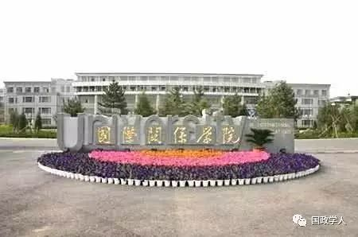
历史
国际关系学院始建于1949年，在周恩来总理的亲切关怀下成立，是一所富有优良传统的高等学府。多年来，党和国家领导人重视和关心学校办学工作。老一辈无产阶级革命家周恩来、朱德、邓颖超等同志曾多次来校视察，与师生亲切交谈，给予极大关怀。陈毅副总理亲笔题写校名。邓小平、陈云、叶剑英等中央领导同志也在不同历史时期，对我校的建设与发展做出过重要批示。
学校曾为新中国第一批“将军大使”开办培训班；20世纪50年代首创侧重外国当代语言学习的教学方法；1964年，被列为全国重点高校；1981年，学校成为全国首批获得硕士学位授予权的单位之一；1983年，率先完成从单一的外语院校向多学科复合型院校的转型。
规模
国际关系学院下设八个教学单位：国际政治系、国际经济系、外语学院、文化与传播系、法律系、信息科技学院、公共管理系、体育美育教研部。一共有四个研究机构：国际战略与安全研究中心、心理教育研究中心、政府采购研究所、中国与国际关系研究中心。
成果
国际关系学院教师每年在国内优秀中文杂志上发表大量学术文章。2013年，原《国际关系学院学报》更名为《国际安全研究》，它是中国第一本以安全研究为特色的学术期刊，主要刊登国际关系、国际安全领域的一流学术研究成果，实行严格的来稿评审制度，在中国学术界声誉迅速提升。《国际安全研究》以国际问题研究为主旨，以国际安全研究为特色，以理论、议题、战略为主线，涵盖当代安全理论、战略与政策问题，重视多维度的安全问题，强调共同安全与合作安全，提倡多样性的研究视角和不同的学术观点，促进安全理论研究与政策实践的结合。
影响力
国际关系学院学术成果，始终具有突出的政策影响力，各种报告被政府有关部门采纳。近年来，国际关系学院的学术影响力，有了明显的提升。国际关系学院《国际安全研究》杂志部已经在北京、新疆、广西等地举办了三次“国际安全研究论坛”，邀请全国最知名的学者参会，得到了媒体的广泛报道和学界的不断好评。
学生培养
国际关系学院以国际问题和外语教学科研为重点、以培养品学兼优的复合型人才为目标，办学模式和办学特色鲜明，在国内外享有较高声誉。国际关系学院为政府部门、科研院所、企事业单位、传播媒体等培养输送了大批优秀人才。许多毕业生已经成长为蜚声中外的专家学者、业务骨干。学校拥有开展外国留学生教育的举办权，并与美国、日本、法国、丹麦等多国大学开展教育合作和学术交流。学校实行秋、春、夏三学期制，其中夏季学期主要聘请国际师资前来授课。
广东外语外贸大学法学院、广东国际战略研究院
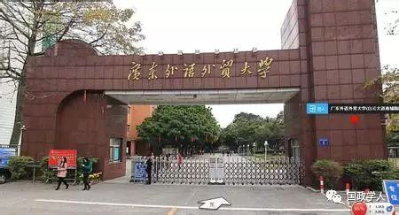
广东外语外贸大学法学院是国内国际化卓越法律人才和高级外交外事人才培养的重镇，其前身是1996年成立的国际法学系，2001年改为现名。 法学院现有法学（分国际经济法、民商法、知识产权法等方向）、外交学、国际政治3个本科专业，法学、政治学2个一级学科硕士点，1个法律硕士(JM)专业学位点，欧洲法律、欧洲政治与外交、俄罗斯国情研究3个博士培养方向。 学院设有国际法学系、法律系、民商法学系、知识产权法系、外交学系、国际政治系和法律硕士教育中心。学校和学院共设有5个法学学科省级研究或培训基地：广东省地方立法研究评估与咨询服务基地、“走出去”战略下涉外法律研究服务中心、广州市绿色经济与环境能源法研究中心、中国- 非洲法律研究中心（广州）和中国- 非洲法律培训基地（广州）；共设有4个法学学科和国政外交学科校级研究基地：广东外语外贸大学土地法制研究院、国际问题研究所、区域一体化法治研究中心、中国信访法治与国家治理研究中心。学院设有6个院级研究机构：教育法制研究所、WTO法研究所、非政府组织研究所、欧盟法律与外交研究室、法律与经贸事务研究所、国际安全与战略研究中心。
广东国际战略研究院成立于 2009年 11月 13日 ,是经广东省人民政府批准成立、以广东外语外贸大学的科研与教学资源为基础的智库。研究院专注于广东国际化战略理论、实践与政策等问题研究，为政府和企业提供战略咨询和决策支持，是外交部政策研究重点合作单位、“一带一路”智库合作联盟理事单位、金砖国家智库合作中方理事单位、中国－东盟思想库网络广东基地、广东省软科学重点研究基地。
广东国际战略研究院聚焦“中国参与全球经济治理”、“21世纪海上丝绸之路”、“周边外交”、“全球价值链”等重大问题;承担了教育部“创新团队发展计划”项目、国家自然科学基金重点项目、国家社会科学基金重大、重点项目以及省自科团队项目等省部级研究项目80余项；完成各类政府决策咨询研究报告130份，其中获得各类批示90多份，其中被中央政治局委员批示7份；荣获教育部科技进步一等奖、全国高校哲学社会科学优秀成果奖、外交部“重大外交政策研究课题”优秀课题组年度课题奖、广东省社科联成立50周年优秀决策咨询成果奖等20余项各级别的奖励。在科学研究、决策咨询、国际型战略人才培养、协同创新、国际合作等方面取得丰硕成果，为广东社会经济国际化发展提供了重要的智力支持。
**同济大学政治与国际关系学院、同济大学中国战略研究院 **
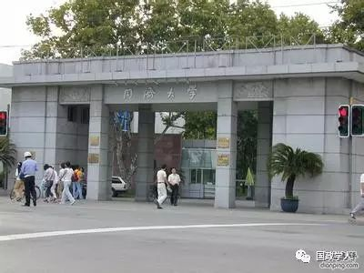
同济大学中国战略研究院成立于2015年。由门洪华教授、王存刚教授领导，聘请时殷弘教授担任学术委员会主席。2015年，同济大学中国战略研究院成为中共中央对外联络部，联合国务院发展研究中心、中国社会科学院、复旦大学联合成立的“一带一路”智库合作联盟理事单位，院长门洪华教授担任联盟理事。2016年，同济大学中国战略研究院入选首批CTTI来源智库（2017-2018年）。
2017年初，门洪华院长被金砖国家智库合作中方理事会聘为理事；同济大学中国战略研究院主办刊物《中国战略报告》（Chinese Journal of Strategic Studies）被中国知网期刊数据库全文收录。 同济大学中国战略研究院以战略研究和国际关系研究为支撑，充分利用同济大学理工科的强大背景，始终坚持打造科研、教学、咨询三位一体的新型智库模式。在上述定位的基础上，积极开展了一系列具有国内外影响力的学术活动，在中国与世界互动关系不断加深的当下，主动地发挥了一所高校智库应尽之责与可行之力。 同济大学中国战略研究院致力于打造科研、教学、咨询三位一体的新型智库模式，即以科研为基础、以教学为支撑、以咨询为延伸。与此同时，同济大学中国战略研究院致力于开放性研究合作，通过创立中国战略论坛、编辑出版《中国战略报告》、设立中国战略研究基金等方式打造中国战略研究的核心平台，与国内外研究学者共襄盛举。
云南大学国际关系研究院
**
**
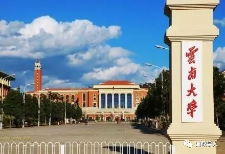
历史
早在上世纪40年代，云南大学就开展了对阿拉伯问题的研究，1964年成立西南亚研究所，这是在周恩来总理亲自关怀下建立的新中国第一批国际问题研究机构之一。1996年成立国际关系研究中心和亚非研究中心，2002年组建国际关系学院，2005年改名为国际关系研究院。
规模
研究院下设西南亚研究所、东南亚研究所、南亚研究所、非洲研究所（中心）四个实体，以及中国西南对外开放与周边安全研究中心、GMS研究中心、印度研究中心、能源安全与战略研究中心、缅甸研究中心等开放式机构。
成果
云南大学的国际关系学科以西亚非洲、东南亚南亚为重点，以周边问题和能源安全研究为亮点，融国际政治、国际经济与贸易、国际法律、国际教育、国际河流与跨境生态安全研究为一体，同时将国际关系学科与中国边疆问题有机结合，积极推进中国边疆学和国际关系学科区域建设。
影响力
云南大学国际关系研究院为政府做了大量的政策报告。中缅油气管道研究成果获国务院副总理批示，2009年3月中缅两国正式鉴署《关于建设中缅原油和天然气管道的政府协议》，我校专家的对策建议首次上升为国家的重大决策。非洲问题的研究成果得到了中央领导人的重要批示。
学生培养
在学科学位点方面，国际关系研究院现有国际关系、国际政治、世界史、世界民族与民族问题、（外交学，未招生）等5个二级学科博士授权，形成了完整的人才培养体系。研究院的人才培养规模稳步发展，现有在读博士生、硕士生150人，攻读硕士和博士学位的留学生40余人。
吉林大学行政学院国际政治系、公共外交学院、东北亚研究院
**
**
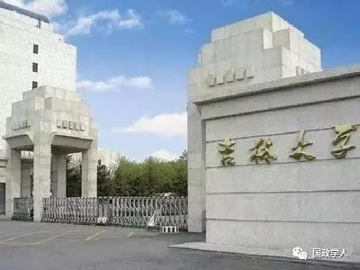
吉林大学行政学院国际政治系有比较完备的人才培养体系， 1997年开始招收国际政治硕士研究生，1998年开办了国际政治本科专业。国际政治学专业2000年被批准为吉林省重点学科，2002年获得国际政治博士授权点。国际政治系已经形成一支结构合理、实力雄厚的教学和科研队伍。本系教师先后承担着国家和省、部级科研项目十余项，出版专著10余部，在核心期刊上发表了大量高质量的学术论文，提供各类国策性咨询报告近十项，先后获得过全国高校人文社会科学优秀成果一等奖1项、吉林省、长春市和吉林大学各类奖励十余项，在国内同行中具有一定的学术影响，产生了一定的社会影响。
吉林大学在东北亚研究方面具有较长的历史。早在1964年，经国家教育部批准就成立了日本问题研究室和朝鲜问题研究室。1994年4月，吉林大学在原东北亚研究中心的基础上，将日本研究所、人口研究所、俄罗斯研究所、朝鲜韩国研究所、图们江国际开发研究所、综合研究所六个处级建制的研究机构合并，成立了东北亚研究院，从而实现了由过去独立机构松散联合到以研究院为实体紧密结合的研究组织体系的转变。1997年，由吉林大学东北亚研究院牵头的"东北亚区域经济、历史与社会发展"学科，被国家批准为"211工程"重点学科建设项目。
兰州大学管理学院、中亚研究中心
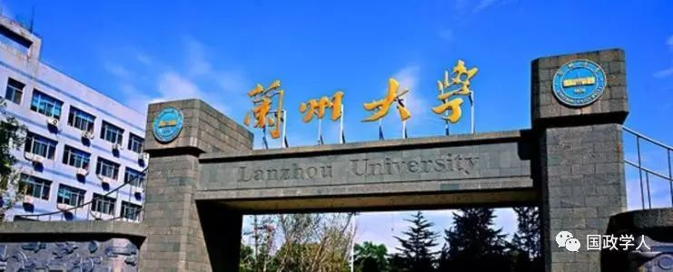
兰州大学是中央布局于国家最西部的唯一一所部属985高校。由于地缘的优势和学科发展的历史，兰州大学国际政治学科在中亚地区、西北边疆安全以及反分裂研究方面已经形成自己的特色。学院教师坚持建立中国特色国际关系理论的必要性，并对和谐世界观展开了多角度的研究。中亚研究中心擅长研究中亚国家的转型问题、上海合作组织的发展前景问题，以及反分裂问题。相关研究人员积极为国家重大决策需求提供智力支持，提升学科水平，构建良好的学术平台，引进了大量科研人才。

编辑：晞哲
扩展阅读：
**
**
中国国际关系理论建设中的中国意识成长及中国学派前途
郭树勇
国际关系理论是一种兼具国际性和民族性的政治理论。在国际社会仍然以民族国家为主要行为体的现阶段，国际关系理论既有国际合作普遍性的一面，也有民族国家特殊性的一面。而历史经验表明，只有当强烈的大国意识与软实力战略紧密结合的时候，国家才有建立本国特色国际关系理论的诉求。
国际关系理论建设的本国意识，并非与生俱来，它是一个包括局部发育、整体性自觉、系统化和理论化的发展过程。
一、局部发育。 局部发育是指知识精英认识到国际关系理论要有民族国家的意识，要对抗外来的理论输入，建立自己的理论阵地，形成自己的理论话语。但是，知识精英的自主性成长还处于发展的初期阶段，意识发育还只能局限在一定的范围内，未达到影响全国的水平。
二、整体性自觉。 整体性自觉是指随着国家的发展，国家实力和民族自豪感不断提升，国际关系理论知识不断普及，越来越多的知识精英具有了建设本国特色理论的紧迫感，有意识地用批判的视角来对待外国理论。
三、意识的系统化。 国际关系理论知识的系统化是指这个国家的知识精英已经拥有足够的能力对理论界进行动员，组织强有力的、深入的学术讨论，构建较为系统化的理论知识体系，形成知识共同体，与国际学术界进行必要的学术交流，并把外来理论的本土化作为经常性任务。
四、意识的理论化。 意识的理论化就是将国家意识有形无形地融入到理论创新之中，在意识系统化的基础上，把本国的外交实践和国际社会实践结合起来，把本国传统文化与国际政治文化结合起来，创立本国的理论流派。实际上，这也是意识的形态化发展。
国际关系理论中的中国意识问题。当中国作为一个大国成长到了新的历史阶段，便紧迫地需要对国际社会做出理论性贡献。这一方面是为了服务中国深度参与全球治理的国家战略；另一方面与中美之间世界性权力转移的历史进程相适应。其本质是中国坚持自身意识形态的立场，维护文化主权，实施软实力战略。其关键是以中国智慧创新当代国际关系理论。理论创新与理论反思是相互依赖关系，理论反思是理论创新的基本动力，理论反思得越深，理论创新水平就会越高。理论反思的要义是重新对理论发展史进行梳理，抓住其理论发展的规律，重点是发现中国意识的成长路径。
1西学东渐与国际关系理论的中国意识成长
国际关系理论作为一个现代学科意义上的理论，始自1919年巴黎和会召开前后，是西方知识精英与政治精英试图防止战争爆发，总结和平经验，发现为人类造福的国际政治规律，培养新一代外交人才的重大努力。
在中国，国际关系理论中的本国意识发育期大致开始于新中国成立，延续到上个世纪八十年代中后期。 这个时期既是中国政治与外交经历革命性发展的时期，也是国际格局大变迁、国际关系理论大发展的时期。美国在全球取得了稳固的学术霸权地位；相比之下，这个时期的中国国际关系理论研究是分散的。 能够影响中国的国外理论大体有三支， 一支 是苏联的国际关系理论，特别是关于国际共产主义运动的理论； 一支 是亚非拉国家的国际关系理论，反对帝国主义压迫和民族解放运动的理论； 一支 是美国和西欧的冷战理论、核理论和其他国际关系理论。面对国外的理论话语强势，国际关系理论的中国意识主要体现为反对霸权的意识、追求平等的意识、维护自身意识形态和文化主权的意识。在具体实践中体现为，新中国坚持独立自主的和平外交路线，坚持国际主义指导下的爱国主义，并决心把外交学中国化。 这时期主要的努力方向有两个，一是 在马克思主义指导下建立自己的国际问题研究立场、观点和方法，抵制西方资本主义国家的国际关系理论； 二是 提高我党的马列主义研究水平，谋求社会主义阵营内部的意识形态话语权，通过影响社会主义国家进而影响世界。
这一时期中国国际关系领域主要关切的问题在于： 对要不要、能不能以及如何融入国际关系学术界有着复杂的心情和不同的认识；如何处理无产阶级国际主义与爱国主义（民族主义）的关系；如何处理意识形态立场与外交领域的国家利益原则的关系；确定中国的国际身份是社会主义国家还是发展中大国等等，这些现实问题都是刚独立不久的新中国需要慎重考虑的问题。在中国意识发育过程中，政治精英的作用明显高于知识精英，政府起到了主导作用。
上世纪80年代，是国际关系理论中中国意识发展的重要转折期，达到了整体性自觉。 引人注目的是，在这个时期出现了专业性的中国国际关系学者群体。随着国际关系学科的正规化建设，以及对国外国际关系理论资料的大量翻译，越来越多的中国知识精英具备了现代国际关系理论知识素养，同时也形成了关于中国意识的整体性自觉，这以1987年在上海召开的全国性的国际关系理论研讨会为标志。 中国意识的整体性自觉主要表现在：第一， 对西方兴起的各类有影响的国际关系理论思潮，特别是错误思潮进行解构和批判。 第二， 围绕“有没有‘中国特色的’国际关系理论”这个问题，展开了较为充分的思想大讨论，这个讨论不仅是学理上的争鸣，也是意识形态上的斗争，是中国国际关系理论自觉的重要体现。 第三， 开始编写一系列国际关系学科的教材和专著。不少教材和著作都强调中国特色的国际关系理论就是以中国特色的社会主义理论为指导，正确确定中国在国际社会的地位，继承和弘扬中华民族的优秀文化传统。
发端于上个世纪九十年代初，历时近十年的中国理论大讨论实质上是一次理论系统化的学术努力。 彰显中国意识的“理论运动”主要内容包括：重新研究马列主义及其当代意义，研究新马克思主义以及实践唯物主义对于新时期中国特色国际关系理论的指导性；继续介绍西方国际关系理论的最新发展，特别是将建构主义的有益成果吸纳进中国，在国内掀起了一次国际关系理论的“本体论”革命，将新现实主义、新自由制度主义和建构主义结合起来形成更具有批评性的理论研究框架；进一步发掘中国传统文化资源，将一些古代中国处理国际关系，特别是“周边外交”的概念和规律吸纳进国际关系理论探讨，规划国际关系大的理论框架，尝试建立“中国特色”的国际关系理论体系，推进理论的“中国式探索”。
2 中国意识的理论化阶段与中国学派的努力
世纪之交以构建“中国理论”为主要内容的学术运动，产生了多方面的后果，其中一个重要的后果就是“中国学派”概念的提出。 从中国意识，到中国理论，再到中国学派，这是一个递进向前的逻辑。 中国意识的萌发是在学习借鉴西方理论的基础上形成的，是中国理论的基础。而中国理论是众多的学术流派进行理论探索的总和，是中国外交实践的理论化的产物，也是中国意识在理论研究中的成果。中国理论的深入发展，在适宜的国际国内条件下，在特定的历史阶段内，必然会显示出本民族和本区域的特色。只要这个特色能够以集中的形式体现出来，建立起既与国际学术界相通，又有民族特征的本位理论及方法论体系，那么，中国学派就是可能的。
要树立中国学派这一学术标识，需要赋予其一个核心概念或者明确其所处的学术地位。 主张中国学派的学者认为， 西方国际关系理论 在一定程度上解释了国际关系领域的某些现象，但是，它们又都 忽视了一个重要的社会性要素：社会互动过程和与之密切相关的社会性关系。 结果是讨论国际关系的理论中却没有“关系”的地位，也鲜有“关系理论”，这是主流西方国际关系理论的重大缺失。 而“过程”和“关系”是中国社会文化中的重要元素，是中国政治哲学中的核心概念。过程包含关系，关系建构过程，过程的核心是运动中的关系，关系的运动形成了过程。如果说西方自启蒙运动以来几百年的一个核心理念是“理性”， 那么中国传统思想中的一个核心理念就是“关系性”。 将这个中国元素概念化，以这个重要概念为核心，并与西方国际关系理论的立论方式相结合，很有可能会在形而上层面勾勒出更具包容性的国际关系理论轮廓。
将“关系性”这个概念作为中国学派建构的本位，是建立既符合中国特色又有时代特征的国际关系理论的重要努力，具有理论上的可行性。 “关系”的确有其浓厚的中国元素，甚至可以说触及中国社会与政治的灵魂。以礼仪见良俗，以伦理铸公序，以礼治建仁政，“关系”实质上体现为一种过程，也是从中国社会的主流交往方式这个意义上讲的；反之，“关系”虽然在西方语境里也经常出现，但是无论西方如何讲“关系”，也总是在物质的层面或者结构的层面打转转，进入不了文化层面。然而，如果认为“关系”仅仅是因为具有中国特色就将其确定为建构中国学派核心概念的话，那就错了。
实际上，“关系”这个概念，既有中国特色的一面，又有国际相通的一面 **。 首先，**关系性权力是国际学术界长期关注的一个重要方面。中国学者从传统文化资源中挖掘“关系”概念，从理论层面补充西方的过程理性之缺，进一步提升“关系”在国际关系理论中的地位，有助于东西方开展平等而富有意义的学术对话。 其次， 当代世界的“社会关系”与国家一体化趋势加强，这是国际政治实践为国际关系理论的发展创造的条件。从根本上说，国际政治也是各种社会关系（包括国际化了的各种国内社会关系）的冲突、平衡过程。抓住了这个后现代社会的共有本质，有助于中外学者共同探讨世界政治的本质，并在此过程中发挥中国学者理解“关系”的知识特长。 最后， 运用“关系”这个概念，也可以与以结构主义为基本特征的西方主流国际关系学界进行对话。
中国学派所指的关系或关系性，既有跨文化性和通约性，也有明显的实践性，这是建立中国理论时需要注意的。 中国语境中的“关系”，除了中国学派主张者所阐述的含义外，还指代一种具有进攻或防守的“力”，一种不断变化的“势”，是介乎当前常讲的社会资本与社会结构之间的东西。关系的非结构性还体现在，个体是可以按照自己的意愿在力所能及的条件下建构关系的，这完全是与西方学者所讲的社会结构不一样的概念。中国学者提出以关系为本位的理论取向，集中地体现了中国学者建构中国理论的自觉。
3 关系理论之后的中国学派发展及其理论贡献
与关系理论相呼应，一些差不多同时发生的理论探索也在理论互动中获得了生机与活力。在这些国际关系理论探索中，中国学者都有意识地从中国的经验和视角出发，提出不同于西方理论的一般假定和方法，推动了中国国际关系学术研究的发展。 在这过程中，理论上比较成体系、参与讨论范围较广、地域性较强的有三个理论流派，即道义现实主义、共生理论和共治理论。
道义现实主义学说以发掘中国传统文化，特别是其中的国际关系思想为途径，试图将国内政治与国际政治、外交战略等要素结合起来，将政治领导类型和国家实力作为影响国家对外战略取向的两个核心因素，把政治领导分为“无为”、“守成”、“进取”和“争斗”四类，指出“当国家实力达到主导国或崛起国水平时，道义的有无与水平高低对国家战略的作用效果，特别是对建立国际规范具有重大影响。中国应以‘公平’、‘正义’、‘文明’的价值观为指导建立国际新秩序。” 道义现实主义提出当代中国外交应当注重道义的作用，这对于显示中国政治领导力、顺利建立国际新秩序、实现中华民族伟大复兴具有十分重要的作用。 道义现实主义的提出，引起了理论上的争鸣，这既是因为它有理论上的魅力、现实上的契合，也是因为它在试图发掘进而概括中国古代国际关系思想过程中，挑战了近代以来东亚学者和当代中国学专家的既有认识。道义现实主义发掘中国古代的国际关系思想，努力续延中国文化传统；它把道义的大旗高高举起，鲜明地指出了中国当代国际关系理论的建设方向，倡导国际关系伦理对于理论建设的意义；它企图以理想主义调和现实主义，从而淡化了中国理论建设中的现实主义色彩。无论成功与否，道义现实主义的提出，都是对以中国古代思想与当代实践为基础融合理想主义和现实主义，调和中国思想与西方理论的重要探索，必将为今后的中国理论发展积累丰富的经验。
共生理论、共治理论是各成一体的国际关系理论学说，两者主要由上海学者提出，是中国学派的重要组成部分。 共生理论的主要观点有： 共生是与斗争相对的社会行为，由于人类社会具有自然性，而共生是自然界和生物界的基本状态，因而国际社会也具有共生性，共生性成为与主体性相对的国际关系特性，从历史上看，东亚朝贡体系是一种共生体系；全球化的深入发展造成了国际社会中的共生网络，使得共生成为当代国际社会的基本存在方式；在和平发展的时代条件下，共生能够克服西方传统的二元对立逻辑，成为国际体系与全球治理的建设原则；建构中国理论，应重点加强国际关系理论的内生和共生建设。
共治理论的主要观点有： 共治即共同治理，有全球共治、区域共治之分；进入二十一世纪，全球治理已成为国际关系中的本质性问题，为解决全球社会管理能力严重不足这一根本问题，共治成为新的国际政治范式；国家仍然是全球治理的核心角色，国家共同治理即合作治理是在尊重多样性、共同性的条件下，通过整合求得一致性，以国家为中心逐步让位于以国家合作共治为中心，建立正式的或非正式的合作共治体系，这是不同于冷战思维的新的多边主义的全球合作模式。无论是共生理论还是共治理论，都还在继续发展，不断涌现出新的代表性人物和重要作品。
共生理论与共治理论之所以能够产生较大的学术影响，一个重要的因素在于其开放性以及与国际学术界的对接性，这也是建立中国学派的一个基本要求。 共生理论与国外的文明多样性思想有着天然的联系，而共治理论则与自由制度主义国际关系理论在很大程度上相契合。这两个理论的开放性和对接性，主要得益于上海的区位优势，上海的研究在过去的三十多年里，形成了自己的特色，做出了应有的贡献。上海学者建构中国学派，努力将北京学者的方向与国外学者的智慧结合起来，形成中西贯通的学术成果。
4 中国学派的概念体系、发展条件及其发展前途
国际关系理论的中国学派，正处于建立和发展的初期，无论在学派定位上，还是概念体系上，都需要学术界进行深入地研究。
概念是理论的基础，也是学派的基础。对于中国学派而言，它的概念体系要考虑元理论，也要考虑问题引导出来的假定。 这套概念体系由核心概念与外围概念、主要概念与辅助概念、宏观概念与中微观概念等层次的概念构成。 如果从元理论的结构上看，一个学派的概念体系中，既有本体论层次的概念，也有认识论层次的概念，还有方法论层次的概念。 建立和发展中国学派，也有必要建设起一套相互间密切联系的概念群或概念体系。近年来国内学者创造性地使用了一系列重要概念，包括关系、共生、共治以及权势、圈序认同、天下主义等，其中前三者有着独特的地位和功能。关系或关系性，是本体论层次的概念，也是一种较为宏观的概念。关系是一种国际政治存在或国际社会存在模式，把关系列为国际政治本体论的研究对象，具有独特的中国视角。关系性也有其不能涵盖的方面，而共生、共治两个概念恰好能够部分地弥补关系理论的不足。关系属于本体论层面的宏观概念，而共生属于认识论和价值论层次的中观概念，而共治则属于方法论和实践论层面的中微观概念。
因此，从一定意义上讲，关系、共生和共治等概念并不是矛盾的，而是相互补充的。 三者在元理论上各安其位，但并不完全处于一个层面上，关系本位提出，中国人视野中的世界政治其实是一组不断变化的关系网络，这个网络是客观存在的，也可以是人为创造的。世界是关系的，可以有限度地改造；又是共生的，不可相互合并、毁灭和取代，国际政治存在着一种天然的伦理底线，任何进步的理论都不能以进步之名而摧毁这种国际社会生态链系统。国际政治既是关系网络的政治，又有着共生的伦理信条。共治理论落脚点在治理上面，“治”是国际政治的核心，中国理论强调共治，不仅是国家间的共同治理，还有国家与社会的共治，国家、个人、家庭的共治，简言之它是身国共治。共治理论还有很大的发展空间，它对西方理论有很大的超越。
无论是上个世纪八九十年代的中国特色国际关系理论探索，还是当前国际关系理论的中国学派建构，都有明显的相似性或共同点，都是德治或仁政的一部分，只要掌握了民心之本，顺乎天下大势，不管眼前的结构或霸权者多么强大，都能够此消彼长，转危为安，掌握根本，立于不败之地。这显然不是政治经济学的逻辑，而是政治社会学的逻辑。只有应用社会学方法论，才能摈弃硬权力、硬结构、零和游戏等学理范畴，从软实力、关系本体、政治文化、辩证思维等角度研究中国国际政治思维的实质。因此，从根本上讲，中国理论更接近于政治社会学的视角。
未来中国学派建设，要从以下几个方面下功夫：一是整合，将反映中国学派主要成就的概念和假定进行合并贯通，形成一个有明显中国特色、又反映当代世界新变化的概念体系。二是抽象，将中国学派的研究对象和主要研究工具加以抽象，增加其理论的普遍性。三是国际化，将中国学派的主要代表作品翻译成外文文献后，向国外传播，从中外人文交流中反观其成败得失，既而不断修正已有假定和命题。四是创新，一个学者可能难以创新，但是一个民族倾其知识精英是能够创新出一个理论的，否则国际关系理论的中国学派就难以成立。
新一代中国学者学贯中外，有着完整的学术训练；走遍天下，与外国学者能够充分的平等的交流；了解中国，从国家转型和社会发展中洞悉国情。这都是过去三十年来多数学者所不具备的能力。中国学派的崛起是一个必然，是一个以中国视角观察世界、理解世界、改造世界的群体的崛起。
本文转自：国政前沿通讯
来源：上外新闻 http://news.shisu.edu.cn/research-/170526-045113?from=timeline&isappinstalled=0
您可能还会喜欢：